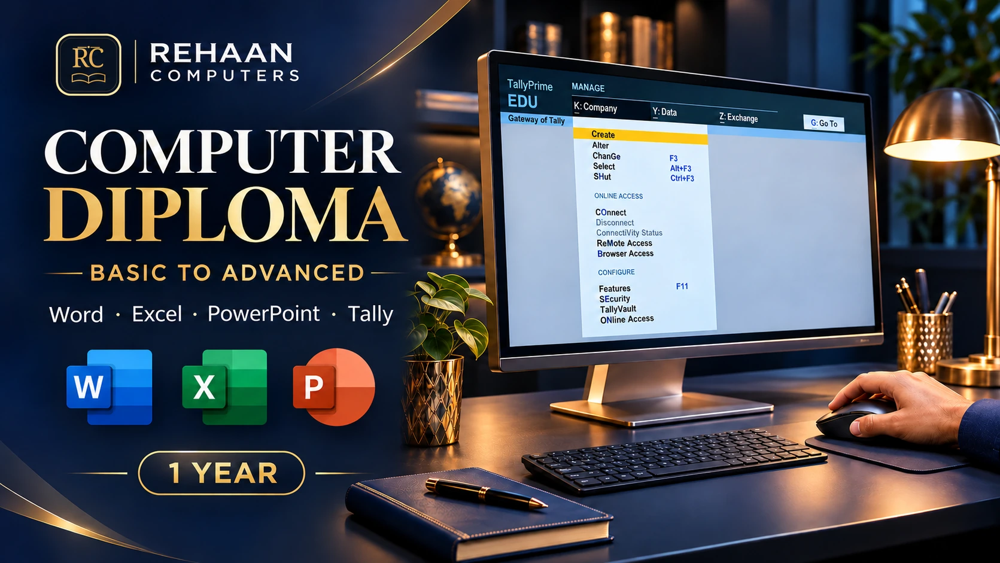
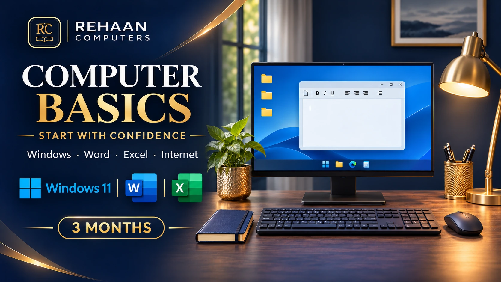
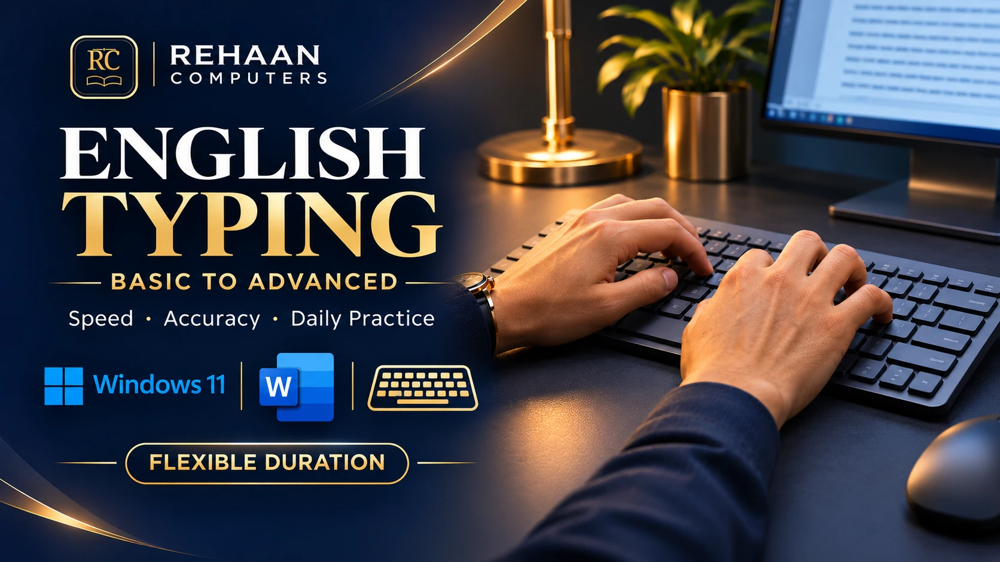
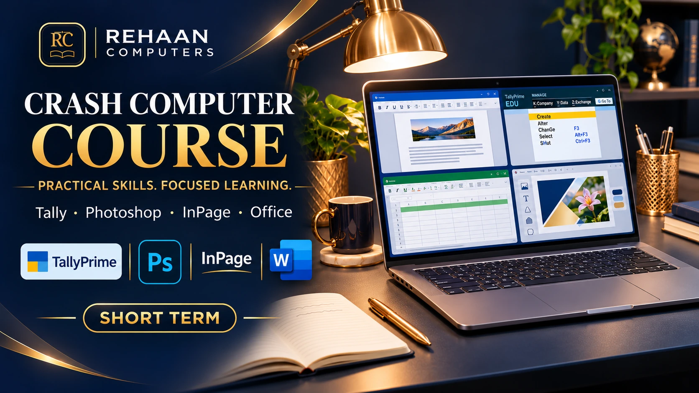
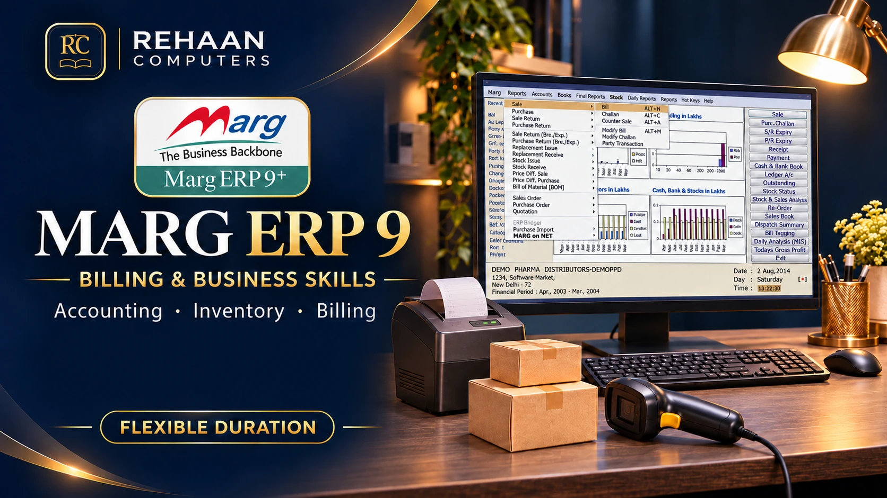

Basic → Advanced
One Year Computer Diploma Course
Basic → Intermediate
Six Month Computer Certificate Course

Start with the basics
Three Month Computer Certificate Course

Basic → Advanced
Typing Diploma Course
Fundamentals → GST workflows
Tally Prime with GST — Detailed Course

Build practical skills
Crash Computer Course

Billing → Inventory
Marg ERP 9 Course